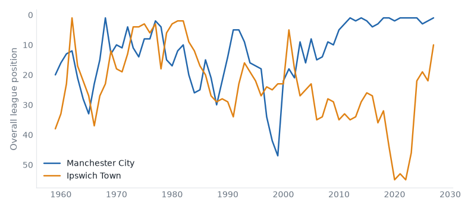
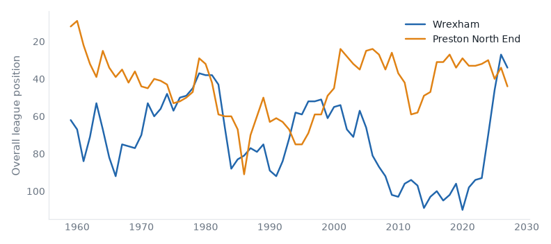

Premier League and Championship, 19 October to 25 October 2026. 23 results.Friday's preview.
Hull v Brentford: no result on file. Friday's case: 2 above level, neighbours, yo-yo club, promoted last season.
Coventry v Fulham: no result on file. Friday's case: above level, neighbours, yo-yo club, champions last season.
Man United v Bournemouth: no result on file. Friday's case: 2 above level, neighbours, yo-yo club.
Lincoln v Burnley: no result on file. Friday's case: 2 above level, yo-yo club, champions last season.
Crystal Palace v Newcastle: no result on file. Friday's case: above level, neighbours, yo-yo club.
West Ham v Southampton: no result on file. Friday's case: below level, neighbours, relegated last season.
Ipswich v Nott'm Forest: no result on file. Friday's case: above level, yo-yo club, promoted last season.
Liverpool v Brighton: no result on file. Friday's case: above level, neighbours.
Man City 3–2 Ipswich compare
Premier League, Sat 17 Oct
Manchester City have 21 points from 7 games, their best start in their record.

Wrexham 4–1 Preston compare
Championship, Sat 17 Oct
Preston North End have 4 points from 11 games, their worst start in their record.

Southampton 0–0 Bolton compare
Championship, Sat 17 Oct
Southampton have 21 points from 11 games, their best start since 2014/15.
Swansea 0–1 West Ham compare
Championship, Sat 17 Oct
West Ham United have 9 games unbeaten in a row, their longest run since 2015/16. Swansea City have 23 points from 11 games, their best start since 2005/06.
Watford 2–0 Charlton compare
Championship, Sat 17 Oct
Watford beat Charlton Athletic for the first time since 2014/15.
Bournemouth 2–0 Sunderland compare
Premier League, Sun 18 Oct
Bournemouth beat Sunderland for the first time since 2016/17. Sunderland have 4 points from 7 games, their worst start since 2016/17.
Brighton 5–0 Crystal Palace compare
Premier League, Sun 18 Oct
Brighton & Hove Albion have 16 points from 7 games, their best start since 2015/16.
Leeds 1–1 Man United compare
Premier League, Sun 18 Oct
Manchester United have 7 points from 7 games, their worst start since 1989/90.
Tottenham 3–1 Coventry compare
Premier League, Mon 19 Oct
Tottenham Hotspur beat Coventry City for the first time since 2000/01. Tottenham Hotspur have 6 points from 7 games, their worst start since 2008/09.
| Sat 17 late | Brentford | 1–2 | Liverpool | compare | ||
| Sat 17 late | Everton | 0–2 | Chelsea | compare | ||
| Sat 17 late | Fulham | 1–0 | Hull | compare | first win v Hull City since 2021/22 | |
| Sat 17 late | Man City | 3–2 | Ipswich | compare | best start on record | |
| Sat 17 late | Newcastle | 0–1 | Aston Villa | compare | ||
| Sun 18 late | Bournemouth | 2–0 | Sunderland | compare | first win v Sunderland since 2016/17 | |
| Sun 18 late | Brighton | 5–0 | Crystal Palace | compare | best start since 2015/16 | |
| Sun 18 late | Leeds | 1–1 | Man United | compare | worst start since 1989/90 | |
| Sun 18 late | Nott'm Forest | 0–1 | Arsenal | compare | ||
| Mon 19 | Tottenham | 3–1 | Coventry | compare | first win v Coventry City since 2000/01 |
| P | W | D | L | GD | Pts | ||
|---|---|---|---|---|---|---|---|
| 1 | Manchester City | 6 | 6 | 0 | 0 | +11 | 18 |
| 2 | Arsenal | 6 | 5 | 0 | 1 | +3 | 15 |
| 3 | Brighton & Hove Albion | 6 | 4 | 1 | 1 | +14 | 13 |
| 4 | Liverpool | 6 | 3 | 2 | 1 | +1 | 11 |
| 5 | Chelsea | 6 | 3 | 1 | 2 | +3 | 10 |
| 6 | Aston Villa | 6 | 2 | 2 | 2 | 0 | 8 |
| 7 | Brentford | 6 | 1 | 4 | 1 | +2 | 7 |
| 8 | Leeds United | 6 | 1 | 4 | 1 | +2 | 7 |
| 9 | Manchester United | 6 | 1 | 4 | 1 | +2 | 7 |
| 10 | Everton | 6 | 1 | 4 | 1 | -1 | 7 |
| 11 | Newcastle United | 6 | 2 | 1 | 3 | -4 | 7 |
| 12 | Crystal Palace | 6 | 2 | 1 | 3 | -6 | 7 |
| 13 | Hull City | 6 | 1 | 3 | 2 | -1 | 6 |
| 14 | Tottenham Hotspur | 6 | 1 | 3 | 2 | -1 | 6 |
| 15 | Bournemouth | 6 | 1 | 3 | 2 | -3 | 6 |
| 16 | Coventry City | 6 | 2 | 0 | 4 | -5 | 6 |
| 17 | Ipswich Town | 6 | 2 | 0 | 4 | -5 | 6 |
| 18 | Fulham | 6 | 1 | 2 | 3 | -2 | 5 |
| 19 | Nottingham Forest | 6 | 1 | 2 | 3 | -3 | 5 |
| 20 | Sunderland | 6 | 1 | 1 | 4 | -7 | 4 |
| Fri 16 late | Burnley | 1–2 | Wolves | compare | best start since 2020/21 | |
| Sat 17 late | Birmingham | 3–0 | QPR | compare | ||
| Sat 17 late | Bristol City | 0–1 | Sheffield United | compare | ||
| Sat 17 late | Derby | 0–1 | Stoke | compare | worst start since 2020/21 | |
| Sat 17 late | Middlesbrough | 2–2 | Cardiff | compare | ||
| Sat 17 late | Millwall | 2–2 | Lincoln | compare | worst start since 2021/22 | |
| Sat 17 late | Norwich | 0–1 | Portsmouth | compare | ||
| Sat 17 late | Southampton | 0–0 | Bolton | compare | best start since 2014/15 | |
| Sat 17 late | Swansea | 0–1 | West Ham | compare | 9 games unbeaten, longest since 2015/16 | |
| Sat 17 late | Watford | 2–0 | Charlton | compare | first win v Charlton Athletic since 2014/15 | |
| Sat 17 late | West Brom | 3–2 | Blackburn | compare | best start since 2021/22 | |
| Sat 17 late | Wrexham | 4–1 | Preston | compare | worst start on record | |
| Tue 20 | Wolves | 1–1 | Portsmouth | compare | best start since 2017/18 |
| P | W | D | L | GD | Pts | ||
|---|---|---|---|---|---|---|---|
| 1 | West Ham United | 6 | 4 | 2 | 0 | +14 | 14 |
| 2 | Birmingham City | 6 | 4 | 1 | 1 | +8 | 13 |
| 3 | Southampton | 6 | 4 | 1 | 1 | +6 | 13 |
| 4 | Stoke City | 6 | 4 | 1 | 1 | +3 | 13 |
| 5 | Middlesbrough | 6 | 3 | 3 | 0 | +3 | 12 |
| 6 | Swansea City | 6 | 4 | 0 | 2 | +2 | 12 |
| 7 | Blackburn Rovers | 6 | 3 | 1 | 2 | +2 | 10 |
| 8 | Bolton Wanderers | 6 | 3 | 1 | 2 | +2 | 10 |
| 9 | West Bromwich Albion | 6 | 3 | 1 | 2 | +1 | 10 |
| 10 | Wolverhampton Wanderers | 6 | 3 | 1 | 2 | 0 | 10 |
| 11 | Sheffield United | 6 | 3 | 0 | 3 | +2 | 9 |
| 12 | Portsmouth | 6 | 2 | 3 | 1 | +1 | 9 |
| 13 | Cardiff City | 6 | 2 | 2 | 2 | +4 | 8 |
| 14 | Wrexham | 6 | 2 | 2 | 2 | -3 | 8 |
| 15 | Queens Park Rangers | 6 | 1 | 4 | 1 | 0 | 7 |
| 16 | Lincoln City | 6 | 2 | 1 | 3 | -8 | 7 |
| 17 | Burnley | 6 | 1 | 3 | 2 | +1 | 6 |
| 18 | Millwall | 6 | 1 | 3 | 2 | -2 | 6 |
| 19 | Watford | 6 | 2 | 0 | 4 | -7 | 6 |
| 20 | Charlton Athletic | 6 | 0 | 4 | 2 | -4 | 4 |
| 21 | Bristol City | 6 | 1 | 1 | 4 | -5 | 4 |
| 22 | Norwich City | 6 | 1 | 0 | 5 | -4 | 3 |
| 23 | Derby County | 6 | 0 | 2 | 4 | -6 | 2 |
| 24 | Preston North End | 6 | 0 | 1 | 5 | -10 | 1 |
Built from the English football database, tiers 1–5 from 1958/59. Results from football-data.co.uk. Archived copy.